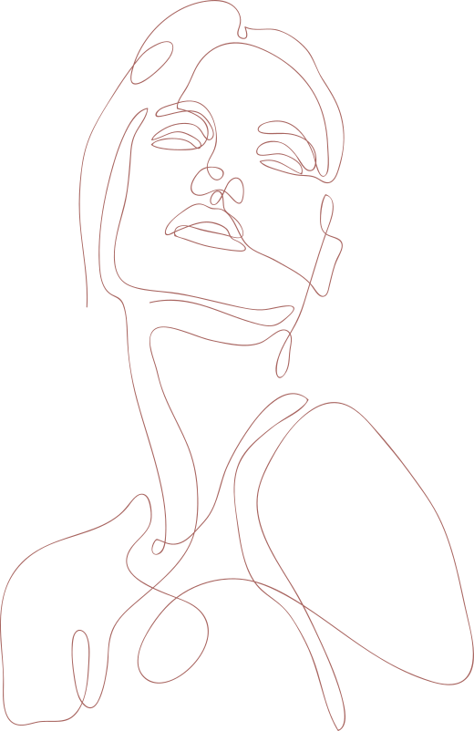
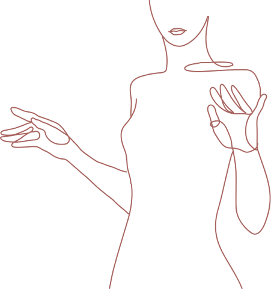

Badania kliniczne
W Santé Medica Petit prowadzimy badania kliniczne, które dają dostęp do nowych, innowacyjnych metod leczenia — często zanim pojawią się one w standardowej praktyce.
Chcesz mieć realny wpływ na przyszłość medycyny? Dołącz do badań i pomóż odkrywać nowe metody leczenia — pod opieką naszego zespołu.
Zobacz więcej → 02A niche clinical site with high-control patient flow, experienced clinicians and premium execution across gynecology and dermatology.
See more →Dla pacjentek
Nowoczesne terapie. Bezpieczeństwo. Realny wpływ na rozwój medycyny — w kameralnej przestrzeni i pod stałą opieką doświadczonych specjalistek.
To kontrolowany, bezpieczny proces medyczny, który odbywa się według ściśle określonych zasad i pod nadzorem specjalistów. Jego celem jest:
Udział w badaniu jest dobrowolny i możesz z niego zrezygnować na każdym etapie.
Regularne wizyty są kluczowe dla zdrowia intymnego, profilaktyki chorób oraz dobrego samopoczucia. Udział w badaniu to dodatkowa, uważna opieka — nigdy nie zastępuje, lecz uzupełnia Twoją stałą diagnostykę.
Jak wygląda proces
Wypełniasz krótki formularz zgłoszeniowy.
Kontaktujemy się z Tobą i odpowiadamy na pytania.
Zapraszamy na badania i ocenę kryteriów.
Po świadomej zgodzie decydujesz, czy chcesz wziąć udział.
For CROs & Sponsors
A niche site with high-control patient flow and premium execution. Santé Medica is a privately operated clinical site specializing in regenerative gynecology, dermatology and translational therapies — combining strong internal patient flow, experienced clinicians and high operational agility.
Why Santé Medica
Our patients are built through long-term clinical relationships rather than acquired solely at the recruitment stage.
Dual recruitment model
Internal recruitment from our own patient base plus targeted external campaigns — a hybrid model that increases predictability and de-risks enrollment.
Therapeutic focus
Operational excellence
Infrastructure
Open to site partnerships, hybrid models with CROs, co-development of clinical concepts and investigator-initiated studies.
Let's collaborate →Najczęstsze pytania
Udział jest dobrowolny i bezpłatny. W ramach badania zapewniamy diagnostykę oraz opiekę zespołu; szczegóły dotyczące ewentualnych zwrotów kosztów omawiamy na wizycie kwalifikacyjnej.
Tak — na każdym etapie i bez podawania przyczyny. Rezygnacja nie wpływa na Twoją dalszą opiekę w klinice.
Każde badanie jest zatwierdzone przez komisję bioetyczną i prowadzone zgodnie z rygorystycznymi standardami, pod stałym nadzorem doświadczonego zespołu. Twoje zdrowie i komfort są dla nas najważniejsze.
Do badań kwalifikujemy osoby spełniające określone kryteria medyczne. O szczegóły zapytaj podczas zgłoszenia — sprawdzimy, czy któraś z aktualnych rekrutacji jest dla Ciebie.
Wypełnij formularz zgłoszeniowy poniżej lub zadzwoń do nas. Skontaktujemy się z Tobą i — jeśli kryteria będą spełnione — zaprosimy na wizytę kwalifikacyjną.

Zgłoś się do badania
Zostaw kontakt, a oddzwonimy, by spokojnie omówić szczegóły i sprawdzić, czy któraś z aktualnych rekrutacji Cię obejmuje. Bez pośpiechu, bez zobowiązań.